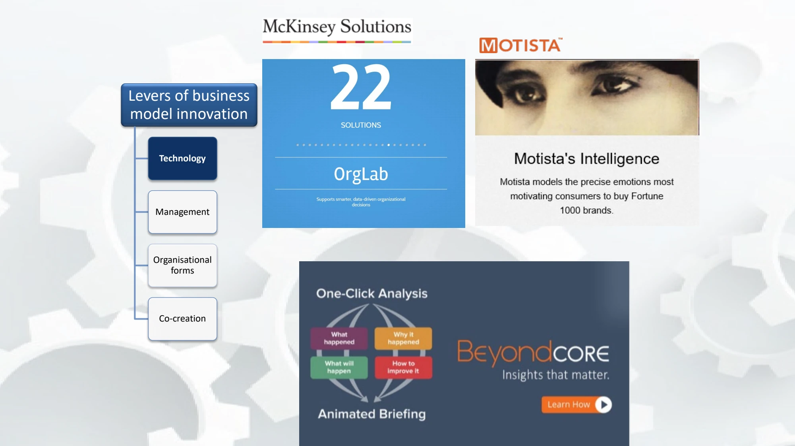

The framework
| Lever | What can change | What to examine |
|---|---|---|
| Technology | Tools, infrastructure and technical possibilities. | Which activities become possible, cheaper, faster or more accessible? |
| Management | Practices, processes and techniques for directing work. | Do decisions, feedback, accountability and resource allocation support the new model? |
| Organizational forms | How work and relationships are arranged. | Do structures and coordination arrangements fit the required activities? |
| Co-creation | Interaction with customers, suppliers, competitors and complementary participants. | Who contributes knowledge or activities that the firm cannot develop alone? |
Key distinctions
An integrated approach
The lecture warns that focusing on technology alone does not necessarily make a firm able to cope with disruption. Agile management, organizational redesign and continuous interaction with external participants illustrate the other mechanisms. Co-creation is treated as more than a one-off consultation.
Read the relative-effects chart carefully
The supplied slide reports management, organizational-form and technology figures of 55%, 39% and 6% for replication, and 59%, 14% and 27% for renewal. Co-creation is excluded from that particular figure. Preserve this context: the chart is not an instruction to allocate a firm's budget in those proportions.
How to use it
- Start with the desired value-creation change.
- Identify the required adjustments in all four levers.
- Check whether changes reinforce or obstruct one another.
- Assign ownership for coordination and communication.
Keep in mind
Introducing a tool is not, by itself, proof of business model innovation. The claim requires a change in the activities or relationships that constitute the model.
Why are four separate improvement lists insufficient?
Reveal the explanation
The levers need to support one coherent business model and its implementation.
Read the classroom original
Complete pages from the supplied lecture slides. Select a page to read, enlarge or browse its extracted text. Page numbers refer to the PDF’s physical page order.
